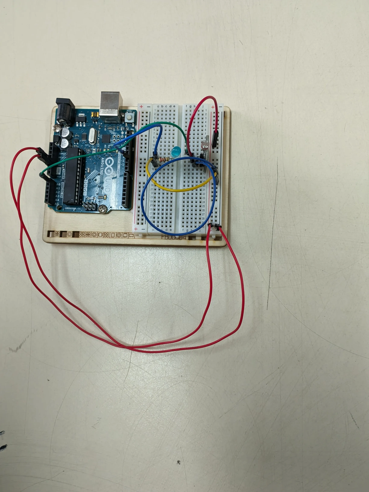

Sobre el proyecto - Colorimetro
Este proyecto trata sobre recrear de forma casera un colorimetro con arduino, los elementos que utilizamos fueron los siguientes: Arduino uno, Protoboard, Cables Dupont, Fotoresistencia y un Led azul. El programa que desarrollamos nos permite detectar colores mediante los valores leidos por la Fotoresistencia, a continuacion se muestra un video de su funcionamiento.